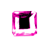
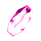
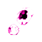
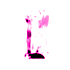
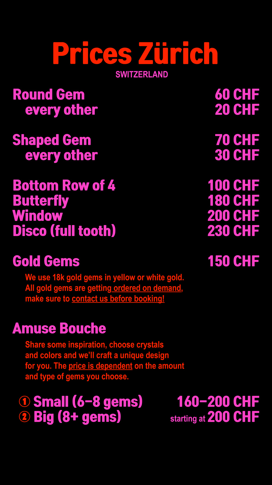
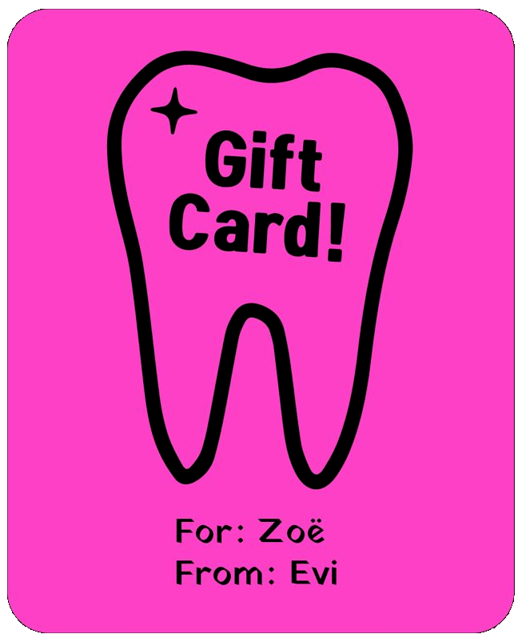
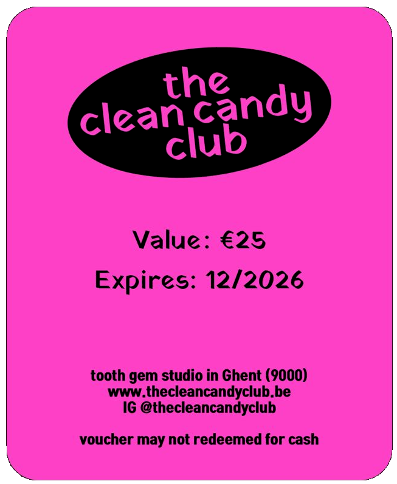

GENERAL INFORMATION
Tooth gems are applied similar to the way braces are - with dental bonding.
They will last long, without damaging your enamel. There is no pain and no permanent commitment.
We use genuine Swarovski crystals and 18k-22k solid gold charms, that are not harmfull if swallowed. All our materials are save for oral use.
Tooth gems can last from a few month to a year or even longer, depending on your aftercare and general dental hygine. On avarage tooth gems last about 6 month.
We offer a range of designs: butterflies, hearts, stars, smiley faces, windows and many other designs. Other options include solid gold charms or full sets, the options are endless!
Tooth gems can only be applied to healthy teeth! If you are unsure of the current state of your teeth, we recommend that you have a check-up before having tooth gems placed.
BRACES, RETAINERS & CO.
Any kind of artificial teeth are not suitable for tooth gems.
The used dental glue is made for natural teeth. This includes veneers or facings, crowns, caps or dentures.
If not all your teeth have veneers on them, we can try to find a design that works with your natural teeth.
If you have retainers we will have to take a look and see if there is a safe way to put a gem on your teeth without interfering with the retainers. Same here, if you have a retainer for your upper jaw, you might be able get gems on your teeth on the bottom row.
If you are under 18 years old you will need permission of a parent or a legal guardian.
Bring a copy of the ID of a parent/legal guardian and their signature on the copy to the appointment.
GOLD GEMS
All Gold gems are made of 18 carat gold and are available in yellow gold and white gold.
The are of high quality and carefully reworked by hand. For all gold gems an advance payment of the purchase price of one gold gem, has to be payed in order for the desired gold gem to be orderd. This will usually take about 2 weeks, so make sure you contact us on time.
AFTER CARE
★ the 10 command-gems ★

After attaching the tooth crystal, it is not recommended to eat or drink for minimum one hour.

Brushing your teeth and eating hard foods is not recommended for the first 12 hours.

The use of an electric toothbrush is not recommended for the first 24 hours.

You should avoid touching the tooth crystal with your tongue or fingers.
Good dental and oral hygiene should continue to be practiced on a regular basis. Best twice a day. However, additional hygiene measures are not necessary.
The tooth gems last from two months to one year, depending on your oral and dental care, acidity of your saliva and eating habbits.
It is not harmful to swallow a crystal, since they are non-toxic and don’t have sharp edges. Lead free, genuine Swarovski crystals are used.
The Gold gems used are made of 18-22 carat gold and are also bodysafe and non-toxic.
Tooth crystals should be removed by a dentist/dental technician. This doesn’t require a great effort, and this is pain free and harmless. It best if you mention you want your toothgems removed when making an appointment.
You have on month of warranty on your tooth gems. If one or multiple gems fall of within this time period, the design will be repaired free of charge.



What a nice gift!
We offer phyisical handmade gift cards to gift your loved ones some joy and gems. You can choose the value of the gift card yourself, anything is possible.
The gift card can either be picked up at one of our Studios during opening hours or send to you per by post.
To get a gift card please contact us either via mail or Instagram.